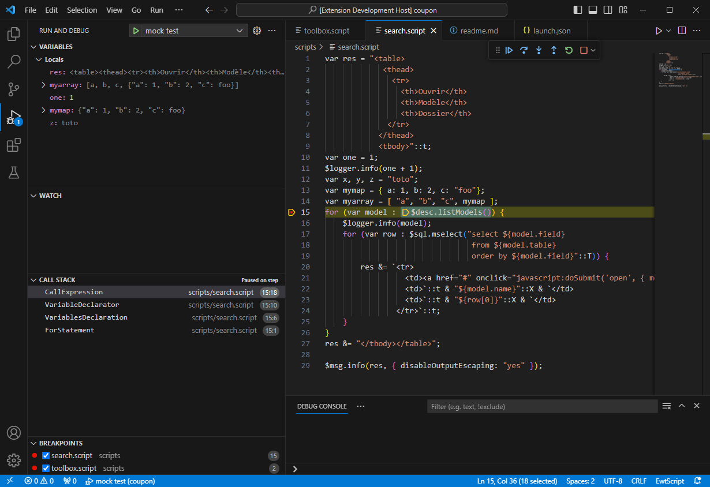
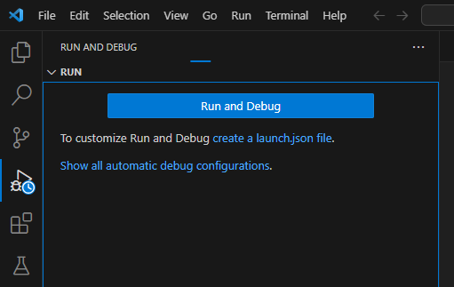

Scripts¶
Les scripts permettent d'évaluer des expressions, d'appliquer des traitements, de calculer des valeurs, d'imprimer des documents, etc. Le langage de script est un mini langage de programmation utilisé à différents endroits dans une application (en tant que script, comme expression de validation de données, comme condition de mise en œuvre d'un statement de policy, etc.)
Structure d'un script¶
Un script est un fichier contenant des instructions. Le script peut être
limité à une seule instruction, par exemple 1; peut constituer un script
(à l'intérêt certes très limité). Chaque instruction doit être terminée par
un point-virgule (;).
Il est possible de définir des périmètres d'évaluation plus restreints au
moyen des mots-clés context et policy. Ces mots-clés sont décrits dans
la suite de ce document.
Syntaxe¶
Note
Le fichier syntax.txt fournit la grammaire complète du langage. Ce
document donne la structure générale d'un script. Il s'agit du document de
référence utilisé pour construire le parseur.
Encoding¶
Par défaut Ewt charge les fichiers de script en considérant qu'ils utilisent
utf-8. Il est possible de déclarer un autre type d'encoding via l'annotation
@encoding("..."), par exemple:
1 2 3 | |
L'annotation doit être placée au tout début du fichier.
Le chapitre Annotations plus bas décrit les différentes annotations disponibles dans le langage.
Policy¶
Le mot-clé policy permet de définir un bloc qui ne s'exécute que dans le
cas où la policy indiquée l'autorise.
1 2 3 4 5 6 7 8 9 | |
Contexte¶
Le contexte permet de désigner des éléments de dossiers (modèle, groupe, champ). La notion de contexte est utilisée à différents endroits dans Ewt, et a fortiori également dans le script.
Le contexte contient jusqu'à 5 éléments:
- le modèle
- le numéro de dossier
- le groupe
- le numéro de tuple
- le champ
Le contexte peut être décrit au moyen d'une chaîne de caractères. Par
exemple, la chaîne mymodel[13].mygroup[2].myfield désigne un contexte où
le modèle est mymodel, le numéro de dossier est "13", le groupe est
mygroup, le numéro de tuple est "2" et le champ est myfield.
Le contexte peut également être décrit au moyen d'un map. Dans ce cas, les propriétés attendues sont:
modelNamedocIdgroupNametupleIdfieldName
Des exemples de correspondance entre les deux formes de notation sont donnés plus bas.
Il est possible de définir un contexte sans numéro de dossier ou sans numéro de tuple. Dans ce cas, on parle d'un contexte qui vient s'appliquer au contexte courant, c'est-à-dire le contexte actif au moment de l'exécution.
Il est également possible de définir un contexte qui se limite à une sous-partie (le modèle uniquement, ou le modèle et le dossier, ou le modèle et le groupe, etc.) D'autres aspects liés à la définition de contextes partiels sont développés plus bas dans ce document.
Le mot-clé context permet de déclarer un contexte d'exécution. Le contexte
est identifié au moyen d'une expression (c'est-à-dire une chaîne de
caractères ou une map) et son contenu n'est évalué que lorsque le contexte
actuel d'exécution correspond au contexte déclaré.
Les deux déclarations de contexte ci-dessous sont équivalentes. Le contenu du contexte n'est évalué que si le dossier courant est du modèle "mymodel".
1 2 3 4 5 6 7 | |
Le contexte peut être défini au moyen du modèle, du numéro de dossier, du nom de groupe, du numéro de tuple et du champ. Voici des exemples de définitions de contexte, sous forme de "string" ou de "map" :
| Notation string | Notation map |
|---|---|
mymodel |
{ modelName: "mymodel" } |
mymodel[1] |
{ modelName: "mymodel", docId: 1 } |
mymodel.mygroup |
{ modelName: "mymodel", groupName: "mygroup" } |
mymodel[1].mygroup |
{ modelName: "mymodel", docId: 1, groupName: "mygroup" } |
mymodel[1].mygroup[2] |
{ modelName: "mymodel", docId: 1, groupName: "mygroup", tupleId: 2 } |
mymodel.mygroup.myfield |
{ modelName: "mymodel", groupName: "mygroup", fieldName: "myfield" } |
mymodel[1].mygroup[2].myfield |
{ modelName: "mymodel", docId: 1, groupName: "mygroup", tupleId: 2, fieldName: "myfield" } |
Si le filtre de contexte est null, une chaîne de caractères vide ("") ou
une map vide ({}), le bloc ne sera évalué que s'il n'y a pas de contexte
courant défini.
Enfin, il est possible de spécifier plusieurs contextes. Pour ce faire, on notera les contextes sous forme de tableau, soit une liste de contextes séparés par une virgule et placés entre crochets. Dans ce cas, le bloc est évalué si le contexte courant correspond à au moins l'un des contextes testés.
1 2 3 | |
Identifiants¶
Au niveau du langage de script, les identifiants de variables, de propriétés et de fonctions n'ont pas d'alphabet clairement défini. La seule condition est qu'ils ne commencent pas par un chiffre et ne contiennent pas de caractère délimiteur. Les caractères délimiteurs sont:
espace
tabulation
retour ligne
.,;:=!?+-*/([{)]}%<>"'`´&|@#^~\
Les autres caractères sont autorisés au niveau des identifiants. Cela signifie qu'il est possible d'utiliser des emojis, des caractères accentués, etc. bien que la lisibilité d'un code utilisant ces caractères reste discutable (mais c'est peut-être une forme d'obfuscation recherchée). Quoi qu'il en soit, si vous utilisez des caractères spéciaux au niveau des identifiants ou des valeurs, nous recommandons que le script soit enregistré en utf-8 pour éviter les problèmes d'encoding.
1 2 3 | |
Le code ci-dessus a pour effet d'afficher la trace "{"✌🏻": 123, "🧑🚀": x,
"statut": ✔️}" dans le log d'application.
Variables¶
Le langage de script permet de créer des variables. Les variables doivent être déclarées selon la syntaxe:
var mavariable;
où mavariable est le nom de la variable à créer. Ce dernier peut
contenir plus ou moins n'importe quel caractère, mais ne doit pas commencer
par un chiffre.
La déclaration d'une variable peut être accompagnée d'une assignation de valeur, par exemple:
var mavariable = "Hello World!";
Variable $$¶
Le nom de variable $$ est réservé. La variable $$ contient les
paramètres passés au script. Ainis, une instruction du style var $$ = 123;
provoquera une erreur.
Utilisation d'une variable¶
Une variable peut être utilisée en indiquant son nom, comme dans n'importe
quel langage de programmation. Il est également possible de référencer une
variable directement depuis une chaîne de caractères au moyen de la notation
${mavariable}.
Déclarations de variables et scopes¶
La valeur d'une variable peut évidemment être modifiée après que la variable ait été déclarée. Pour cela, il suffit de (ré-)assigner une nouvelle valeur comme ceci:
mavariable = "nouvelle valeur";
Par contre, une variable ne peut pas être redéclarée au sein d'un même bloc, ou plus exactement au sein d'un même scope. En clair, le code suivant générera une erreur "Object `foo` already defined" à la seconde ligne:
1 2 | |
Dans l'exemple ci-dessus, le fait de redéclarer foo à l'aide du mot-clé
var n'est pas permis. Toutefois, il est possible de déclarer une variable
déjà existante, mais uniquement dans un autre scope. Ce point est abordé
plus bas dans le chapitre qui traite de la
Portée des objets (scope).
Constantes¶
Les constantes sont des variables que l'on ne peut pas modifier a posteriori. Il est donc obligatoire d'assigner une valeur à la constante.
On déclare une constante à l'aide du mot-clé const. La syntaxe est
similaire à var.
const maconstante = "Hello World!";
Préfixe data:¶
Le préfixe data: indique que l'on veut référencer une donnée de dossier.
Il s'agit d'une variante de la référence de variable au sein d'une chaîne
de caractères. Attention, cette notation retournera systématiquement une
valeur sous forme de String. Pour obtenir une valeur correctement typée,
utiliser la notation "sharp".
La référence ${data:expr} indique donc que l'on souhaite obtenir une
représentation string de valeur de champ correspondant à l'expression de
contexte expr. L'expression doit permettre d'identifier l'élément à
retourner. Elle peut prendre différentes formes en fonction du contexte
courant.
Ainsi, en l'absence de contexte courant, la référence
${data:mymodel[13].mygroup[2].myfield} désigne la valeur du champ
myfield du tuple 2 du groupe mygroup du dossier 13 du modèle
mymodel.
La notation peut être raccourcie:
- lorsque le contexte courant est défini,
- lorsque l'on souhaite récupérer la valeur d'un champ du groupe principal,
- lorsque l'on souhaite récupérer la valeur de tous les champs d'un groupe multi
Ainsi, si le contexte courant correspond à mymodel[13], on pourra
simplement indiquer ${data:mygroup[2].myfield} pour obtenir la valeur du
champ myfield du groupe mygroup ayant l'id 2 sur ce dossier.
Si le contexte courant correspond à mymodel[13].mygroup[2], on pourra se
contenter de noter ${data:myfield}.
En cas d'incohérence entre le contexte courant et l'expression, c'est cette
dernière qui prime. Ainsi, dans le cas où le contexte courant correspond à
mymodel[13].mygroup[2], l'expression ${data:mygroup[5].myfield}
retournera la valeur myfield du tuple 5 du groupe mygroup.
L'identifiant de tuple est facultatif dans le cas des groupes de type single (qui ne possèdent qu'une seule valeur de chaque champ). S'il est omis dans le cas d'un groupe multi, la valeur sera une représentation d'un tableau des valeurs correspondantes. Il n'est pas recommandé d'exploiter cette représentation car elle ne suit pas une convention clairement établie.
Il est possible de forcer une valeur par défaut pour le cas où la référence
de champ est invalide. Pour ce faire, il suffit d'ajouter un pipe (|)
après l'expression et de passer la valeur par défaut, par exemple
${data:mygroup.myfield|0} pour retourner 0 en cas de référence introuvable.
Il est mentionné plus haut que la notation peut être raccourcie lorsque l'on
souhaite récupérer la valeur d'un champ du groupe principal. En effet, le
groupe principal est le groupe qui donne son tupleId au dossier. Par
conséquent le tupleId du groupe principal est toujours équivalent au
docId du dossier. La notation peut être raccourcie, de sorte que
mymodel[13].mygroup[13].field peut être exprimé avec mymodel[13].myfield.
Remarque concernant le typage
La notation ${data:myfield} est utilisable au sein d'une string.
L'expression
var x = "${data:montant}";
permet de récupérer la valeur du champ montant dans la variable x,
mais cette dernière sera alors de type string et non de type numérique
comme on pourrait s'y attendre. La notation ${data:...} sert donc
essentiellement à reprendre des valeurs au sein de chaînes de caractères.
Dans le cas de l'exemple ci-dessus, il existe deux solutions pour que la
variable x soit de type numérique: effectuer un cast de la valeur ou
utiliser la notation "sharp". L'exemple ci-dessous
illustre ces deux possibilités:
1 2 3 4 5 | |
Notation "sharp"¶
On appelle notation "sharp" la syntaxe consistant à référencer un champ ou
plusieurs champs au moyen d'une expression de contexte ayant un caractère
# en préfixe, par exemple:
#mygroup[5].myfield
La notation "sharp" permet d'obtenir la valeur d'un champ, comme c'est le
cas avec la notation ${data:field}, mais elle apporte plusieurs avantages.
Type¶
En premier lieu, la notation "sharp" résout le problème de perte du type
lorsque l'on souhaite récupérer une valeur de champ. Comme décrit dans la
remarque du chapitre précédent, le référencement de valeur de champ à l'aide
de la notation ${data:field} nous fait perdre le type de la valeur, car
cette notation n'est utilisable qu'au sein d'une chaîne de caractères (la
valeur dans ce cas est donc toujours de type string).
La notation "sharp" permet de récupérer la valeur dans le bon type, c'est-à-dire le type du champ lui-même.
Performances
Une alternative au problème de typage pourrait être un cast de type
(décrit plus bas), mais cette façon de faire n'est pas recommandée car
elle est sensiblement moins performante que d'utiliser la notation
"sharp". En effet, les expressions inscrites en notation "sharp" peuvent
être pré-traitées par le processeur de script, alors que les expressions
données au moyen de la notation ${data:...} nécessitent un parsing à
l'exécution. Le cast de type impose également un travail supplémentaire
de la part du processeur au moment du runtime.
Valeurs "multi"¶
Remarque
En réalité la notation ${data:field} permet également de traiter
des champs "multi", mais la valeur générée dans ce cas est une
représentation des données sous forme de texte et non des
données typées exploitables de manière propre.
Comme mentionné au début de ce chapitre, la notation "sharp" permet de référencer un ou plusieurs champs. En effet, il peut arriver que l'on souhaite récupérer toutes les occurrences d'un champ "multi". La notation "sharp" permet de le faire.
Ainsi, si on génère une référence de champ "multi" sans que l'identifiant de
tuple ne soit clairement défini (que ce soit au niveau du contexte
courant ou de la référence "sharp" elle-même), alors la valeur de
retour sera un tableau contenant des map contenant l'identifiant de tuple et
la valeur de champ. Par exemple, la référence ${data:mygroup.myfield}
pourrait retourner le tableau suivant si le groupe contient les tuples "1",
"2" et "5":
[ { "idTuple": 1, myfield: "un" },
{ "idTuple": 2, myfield: "deux" },
{ "idTuple": 5, myfield: "cinq" } ];
Le tableau généré contient autant d'entrées qu'il y a de tuples dans le groupe contenant le champ. Chaque entrée est un map contenant le champ faisant office de clé primaire (si existant) et du champ référencé lui-même.
Filtre et tri¶
Remarque
Dans la version actuelle du langage, les options de filtre et de tri ne sont prises en compte que sur les références de champs "multi". Elles sont ignorées dans le cas de champs "single".
La notation "sharp" permet en outre d'appliquer des règles de filtre et de tri sur le fieldset référencé. Pour ce faire, il suffit d'ajouter un paramètre à la notation. Le paramètre attendu sera alors un map qui permet de fournir les fonctions de callback pour réaliser le filtre et le tri.
La fonction de callback pour le filtre attend 1 paramètre (le
tuple sur lequel la règle de filtre doit se prononcer) et doit être
mappée sur la propriété filter. Ce paramètre est un map contenant tous les
champs du tuple.
La fonction de callback pour le tri attend 2 paramètres (une paire de
tuples à comparer) et doit être mappée sur la propriété sort. Les
paramètres reçus sont des maps contenant tous les champs des tuples à
comparer. La fonction de callback doit être construite selon le même
principe que la fonction de callback mode passée en option à la méthode
$array.sort. On attend qu'elle
retourne une valeur selon le principe suivant:
- 0 lorsque
p1 == p2 - <0 lorsque
p1 < p2(lorsquep1doit être placé avantp2dans la table triée) - >0 lorsque
p2 < p1(lorsquep1doit être placé aprèsp2dans la table triée)
L'exemple ci-dessous montre comment spécifier des règles de filtre
et de tri sur un fieldset désigné par la notation "sharp". La valeur data
générée contiendra uniquement les tuples dont la position est un chiffre
pair. Ces tuples seront en outre triés de façon décroissante.
1 2 3 4 5 6 7 8 9 10 11 12 | |
Dans cet exemple, nous illustrons comment définir les fonctions de
callback de deux façons différentes. La propriété filter est définie au
moyen d'une fonction inline. Celle-ci doit être annoncée au moyen du
mot-clé function. La propriété sort quant à elle référence une fonction
déclarée ailleurs dans le code. Il aurait également été possible d'utiliser
une fonction inline.
Notons enfin que la notation "sharp" est également utilisée pour désigner les champs pour lesquels on souhaite définir un calcul. Ce sujet est traité plus bas dans ce document.
Autres options¶
La notation "sharp" supporte également les options supplémentaires suivantes:
binary(oubin, oubinaries)- Flag
true/falseindiquant si les fichiers binaires doivent être téléchargés depuis la base de données. Par défaut le flag estfalsepour réduire l'impact sur les performances
Portée des objets (scope)¶
La portée d'une variable est l'ensemble des sections dans lesquelles la
variable est définie. Typiquement, une portée couvre l'ensemble d'un
bloc délimité par les caractères { et }.
Par défaut, les objets (variables ou fonctions) créés par un script sont enregistrés dans le scope courant et sont accessibles dans le bloc où ils ont été créés. Les scopes fils peuvent récupérer et modifier des objets créés dans les scopes parents.
1 2 3 4 5 6 7 8 9 10 11 12 13 | |
Une conséquence de cela est que les fonctions définies dans une dépendance
et référencée par le mot-clé import sont inutilisables car elles sont
définies dans le scope de la dépendance elle-même. Il existe heureusement
une manière d'indiquer que l'on souhaite rendre un objet visible de partout:
pour cela il faut utiliser le mot-clé export.
Le mot-clé export supporte trois types de notation (voir élément
ExportStatement dans la grammaire du langage) :
1 2 3 4 5 6 | |
Les objets "exportés" sont référencés au niveau du scope racine. Cela
signifie qu'ils deviennent accessibles depuis n'importe quel endroit du code
du script, soit sous leur nom d'origine, soit sous le nouveau nom défini par
l'alias (introduit par le mot-clé as).
Redéfinition de variable¶
On a vu qu'il n'est pas possible de définir plusieurs fois une même variable au niveau d'un scope (cf. chapitre Variables). Toutefois, il est possible dans certains cas de redéclarer une variable déjà existante.
Par exemple, le code suivant est fonctionnel:
1 2 3 4 5 6 7 8 9 10 11 12 13 14 15 16 17 18 | |
Cela n'est pas possible dans tous les cas: les méthodes mises à disposition
par le moteur, les variables utilisées pour le contrôle des boucles for,
les paramètres de fonctions ainsi que quelques variables prédéfinies par le
moteur ne peuvent pas être surchargés.
Remarques sur les fonctions¶
Portée (scope)¶
Le scope des fonctions est basé sur le scope du bloc dans lequel la fonction est définie, non sur le scope de l'élément depuis lequel la fonction est invoquée. Prenons l'exemple suivant:
1 2 3 4 5 6 7 8 9 | |
Dans cet exemple, la fonction test2 crée une variable foo puis appelle
la fonction test1. Cette dernière définit également une variable foo. Le
fait que le scope de test1 dépende du scope de base et non du scope de
test2 (depuis lequel la fonction test1 est appelée) fait que la
redéfinition de la variable foo est permise et ne génère pas de conflit
avec la variable du même nom déjà existante dans test2.
Une autre conséquence est le fait qu'il est possible de déclarer des fonctions homonymes, pour autant que cela ne crée pas de doublon au sein du bloc. Prenons l'exemple suivant:
1 2 3 4 5 6 7 8 9 10 11 12 13 14 15 | |
Le code ci-dessus ne génère pas d'erreur malgré le fait que l'on déclare 2
fonctions foo() car ces deux fonctions ne se trouvent pas dans le même bloc.
Déclaration tardive¶
Il est possible de référencer une fonction avant que celle-ci ne soit déclarée. Concrètement, cela signifie qu'il est possible d'appeler une fonction alors que la déclaration de cette dernière est faite plus bas dans le code du script. Ainsi le code ci-dessous est fonctionnel:
1 2 3 4 5 6 7 8 9 10 11 12 13 | |
Cependant, cela ne s'applique qu'aux fonctions déclarées au sein du bloc ou au niveau racine du script. Les fonctions déclarées dans des librairies externes doivent être disponibles au moment de leur invocation. Il n'est donc pas possible d'invoquer une méthode de librairie qui serait importée après coup.
De plus, la fonction doit être déclarée selon la notation illustrée
ci-dessus, ou éventuellement avec une clause export comme dans le cas de
la fonction bar ci-dessus. Par contre si une fonction est mappée sur une
variable, la déclaration tardive ne sera pas prise en compte. Voici un
exemple:
1 2 3 4 5 | |
Typage des objets¶
Les objets créés ou référencés dans un script sont typés. Cela concerne les variables, les paramètres de fonction, les valeurs de retour, les valeurs de champs d'un dossier, etc.
Le typage est en principe automatique : il n'est pas nécessaire de spécifier
le type d'une variable à sa déclaration. Le moteur se charge de typer l'objet
en fonction de la valeur. Par exemple dans le cas de la déclaration
ci-dessous, le moteur se charge automatiquement de traiter la variable x
avec le type number.
var x = 1.2;
Il est cependant possible de caster une valeur. Cela est décrit plus bas dans ce document.
La version actuelle du langage utilise les types suivants:
- string : chaîne de caractères
- number : valeur numérique, pouvant être un nombre entier, un nombre flottant ou une valeur booléenne
- boolean : valeur numérique interprétée comme un booléen
- array : tableau de valeurs (ces dernières ayant à leur tour l'un des types décrits ici)
- map : table de clés/valeurs; les clés doivent être des strings et les valeurs ont l'un des types décrits ici
- date : date au format
yyyy-MM-dd - time : heure au format
HH:mm:ss - timestamp : date et heure au format
yyyy-MM-dd HH:mm:ss.SSSSSS - file : référence de fichier; ce type ne stocke pas directement le fichier en mémoire, mais est une référence vers un fichier du filesystem; l'objet stocke également le mimetype du fichier
- pojo : (pour "Plain Old Java Object") référence d'objet java conservé en mémoire; ce type permet de référencer un objet java en vue d'une réutilisation ultérieure par une librairie
- function : une "function" désigne une fonction écrite en script, c.-à-d. par le développeur de l'application métier
- null : ce type représente un objet null
- method : une "method" est une fonction mise à disposition par le moteur
Ewt; par exemple
$logger.debugest une méthode pré-existante; il n'est par contre pas possible de créer de méthodes depuis un script.
1 2 3 4 5 | |
La création d'objets d'autres types que ceux illustrés ci-dessus nécessitent
l'utilisation de méthodes fournies par le moteur. Par exemple pour créer un
objet "date" on utilisera des méthodes de la librairie $cal; un objet
file pourra être créé au moyen de la librairie $file, etc.
Les opérateurs arithmétiques ("+", "-", "*", "/", "%") sont réservés aux
données de type number.
La concaténation de string se fait au moyen de l'opérateur &.
Type string¶
Les chaînes de caractères sont enregistrés en tant que string.
Le langage de script permet de spécifier une chaîne de caractères au moyen de trois types de délimiteurs:
- Le guillemet double
" - L'apostrophe
' - Le backtick (ou accent grave)
`
Le délimiteur doit être "échappé" au moyen d'un backspace \ s'il doit être
utilisé dans la chaîne de caractères, par exemple:
var valeur = 'l\'avion';
Type number¶
Le type number désigne tout type de nombre, qu'il s'agisse d'entiers, de
valeurs décimales. Il désigne également les valeurs booléennes, ainsi que
les valeurs "infini" (positif et négatif). Il prend également en charge les
valeurs "NaN" et le zéro négatif.
Bien que les valeurs entières et décimales sont toutes considérées comme
number, Ewt tente de conserver la nature des valeurs. Ainsi une opération
arithmétique réalisée sur des entiers donnera un entier (pour autant que
cela soit possible). Une illustration est donnée dans les exemples
ci-dessous.
1 2 3 4 5 6 7 8 9 10 11 12 | |
Type boolean¶
Le type boolean est en réalité un alias du type number appliqué à des
objets pouvant valoir 0 ou 1. La valeur 0 est associé à false et 1 est
associé à true.
Les mots-clés true et false sont reconnus par le langage et représentent
respectivement les valeurs 1 et 0.
En logique booléenne, l'addition (+) est associée à un OU et la
multiplication est associée à un ET. Les autres opérateurs arithmétiques ne
sont pas autorisés. Il n'est pas non plus permis d'effectuer des opérations
arithmétiques mélangeant des valeurs booléennes et des valeurs non
booléennes. Notez l'utilisation d'une clause try/catch dans l'exemple
ci-dessous pour traiter l'exception déclenchée par l'opération true / true.
1 2 3 4 5 6 7 8 9 10 11 12 13 14 15 16 | |
Type array¶
Un tableau (array) peut être déclaré au moyen de la même notation qu'en
javascript, c'est-à-dire au moyen de crochets [ et ]. La librairie
$array permet en outre de réaliser des opérations sur les tableaux de
valeurs.
Les éléments d'un tableau peuvent également être extraits au moyen de la notation standard utilisant les crochets. L'indice de l'élément doit être spécifié entre les crochets. La numérotation des éléments commence à 0.
var valeur = [ 1, 2, 3 ];
$logger.info(valeur[1]); // 2
Certains opérateurs peuvent être utilisés pour des tableaux. C'est le cas de
+, +=, & et &=. Le chapitre Tableaux revient sur ces
notions plus en détail.
Type map¶
Un map est une table de correspondances clé/valeur. Le map peut être
déclaré au moyen de la même notation qu'en javascript. Dans le cas une clé
doit utiliser des caractères non standard, il est recommandé de la passer
sous forme de chaîne de caractères.
La référence d'une entrée de map se fait au moyen du point . ou à l'aide
de crochets.
1 2 3 4 5 6 7 | |
Les maps sont décrits plus en détail dans le chapitre Map plus bas dans ce document.
Type date¶
Il n'est pas possible d'instancier une date directement. Les objets de
type date doivent être créés au moyen de la librairie $cal.
Type time¶
Il n'est pas possible d'instancier une heure directement. Les objets de
type time doivent être créés au moyen de la librairie $cal.
Type timestamp¶
Il n'est pas possible d'instancier un timestamp directement. Les objets de
type timestamp doivent être créés au moyen de la librairie $cal.
Type file¶
Un objet file est une référence vers un fichier. Le fichier en question ne
doit pas obligatoirement exister, un objet file peut très bien référencer
un fichier qui n'existe pas encore (par exemple dans le cas où on veut
justement le créer et y ajouter des données).
Il n'est pas possible d'instancier un objet file directement. Les objets de
ce type doivent être créés au moyen de la librairie $file. À noter
que d'autres librairies permettent également d'instancier des objets file.
Type pojo¶
Un objet pojo (pour "Plain Old Java Object") est en réalité une référence
d'objet java conservé en mémoire par le processeur de script. Il n'est pas
possible d'instancier ce type d'objet directement. Il est utilisé dans le
cas de certaines méthodes qui doivent manipuler des objets java.
Type function¶
Le type function désigne une fonction écrite au niveau d'un script. Une
fonction peut être mappée sur une variable ou passée en callback. Les
fonctions sont déclarées au moyen de l'instruction function.
L'exemple ci-dessous donne deux variantes de définition de fonction. Notez le point-virgule obligatoire à la fin de la définition de "bar" (car on est dans le contexte d'une déclaration de variable dans ce cas):
1 2 3 4 5 6 7 8 9 10 | |
Type null¶
Ce type représente un objet null. Le mot-clé null lui-même est une
instance du type null.
Type method¶
Le type method désigne une méthode de librairie fournie par Ewt. On
distingue les "méthodes" des "fonctions" justement par le fait que les
méthodes sont fournies par le moteur, alors que les fonctions sont fournies
par le script lui-même.
Il n'est pas possible de créer d'objet de ce type depuis un script.
Cast de valeur¶
Les valeurs sont donc pseudo-typées et certaines fonctions s'attendent à ce que les valeurs soient typées correctement. Cela est particulièrement important sur certains SGBD, comme illustré dans l'exemple plus bas.
Le langage permet de caster des valeurs avec la notation standard utilisant les parenthèses. Ainsi, il dispose des expressions suivantes pour effectuer les conversions de type:
(number)(string)(boolean)(date)(time)(timestamp)(file)
Note
Les opérations de cast sont généralement gourmandes en ressources et ne
sont par conséquent pas recommandées, en particulier dans les grandes
boucles. Si l'intention de développeur est de convertir une valeur de
champ obtenue à l'aide de la notation ${data:xxx}, peut-être est-il bon
d'envisager d'utiliser la notation "sharp", ce qui revient à noter #xxx
dans le cas présent. La valeur retournée par la notation "sharp" est
toujours typée en fonction du type du champ.
Exemple¶
La conversion peut se révéler obligatoire dans certains cas. Par exemple, prenons l'expression suivante:
$sql.select(`select count(*)
from Vendeur
where Numero <> ?`::T, [ "{$data:numero}" ]);
Le champ "Numero" étant un entier, Postgres signalera l'erreur suivante:
ERROR: operator does not exist: integer <> character varying
Indice : No operator matches the given name and argument type(s). You
might need to add explicit type casts.
Position : 43
Exception occurred because of SQLSTATE(42883), ErrorCode(0)
Cela vient du fait que l'expression "{$data:numero}" est une string et que
Postgres ne sait pas faire l'opération <> entre un entier et une string.
Pour éviter l'erreur, plusieurs options s'offrent à nous:
- On peut forcer le cast au niveau de la requête SQL. Cela revient à
remplacer le test d'inégalité du
wherepar... Numero <> ?::int - On peut caster la valeur au niveau des paramètres passés au statement:
[ (number) "${data:numero}" ]
- On peut utiliser la notation sharp au niveau des paramètres passés au statement:
[ #numero ]
Les options 2 et 3 ci-dessus sont préférables à la première car elles permettent de conserver une requête plus compatible entre différents SGBD. L'option 3 est quant à elle préférable à la seconde pour des raisons de performances.
Remarque concernant l'implémentation
En interne, Ewt stocke les valeurs entières en tant que "BigInteger" pour supporter les grands nombres et les valeurs flottantes en tant que "BigDecimal" afin de garantir un niveau de précision suffisant au niveau des décimales.
Mot-clé typeof¶
L'opérateur typeof permet de déterminer le type d'un objet. Il retourne le
type sous la forme de chaîne de caractères.
Si l'objet est null ou s'il est déclaré mais n'a pas de valeur, l'opérateur
retournera une chaîne de caractères avec la valeur "null".
var foo;
$logger.info(typeof foo); // affiche "null"
Si l'objet n'existe pas, l'opérateur retournera la valeur "undefined". L'opérateur peut donc servir à déterminer si un paramètre de script est bien défini.
if (typeof $$.test != "undefined") {
// ...
}
Chaînes de caractères¶
Les chaînes de caractères sont à délimiter par les caractères " (double
guillemets), ' (apostrophe) ou ` (accent grave, ou backtick).
Les trois types de délimiteurs sont équivalents. Le délimiteur utilisé sur
une chaîne doit être échappé au moyen d'un "backspace" (\) si
on souhaite l'utiliser en tant que texte dans la chaîne.
Les séquences d'échappement reconnues sont:
| Séquence | Description |
|---|---|
| \t | Insère une tabulation |
| \n | Insère un saut de ligne |
| \r | Insère un retour chariot |
| \\ | Insère un backslash |
| \b | Insère un backspace |
| \f | Insère un page break |
Le langage permet de traiter ou au contraire de conserver les séquences
d'échappement. Le chapitre Suffixes ::ESC et ::esc
présente ces options plus en détail.
Les chaînes de caractères peuvent être multilignes et peuvent contenir des références de variables inlines selon la notation décrite au prochain chapitre.
Résolution de variables¶
Il est possible d'intégrer des références de variables au sein d'une chaîne
de caractères. Pour ce faire, on utilise la notation suivante: ${ref}
où ref est une référence de variable. Ainsi, une chaîne
"il est ${a} heures" sera retraitée pour substituer la partie ${a} avec
la valeur de a.
Les variables DOIVENT exister au moment où on les référence, sans quoi le processeur générera une erreur et substituera la variable avec une valeur vide.
Exemples de résolutions de variables:
1 2 3 4 5 6 7 8 9 10 11 12 | |
Comme on peut le voir dans les exemples ci-dessus, il est possible d'indiquer au processeur de NE PAS effectuer de substitution. Pour ce faire, il existe deux solutions:
- On peut préfixer la définition de variable avec un
$supplémentaire (par exemple"$${a}") - On peut ajouter le suffixe
::rawà la chaîne (par exemple"${a} "::raw"). Le suffixe agit sur toute la chaîne, donc il ignore les substitutions de toutes les références de variables qui s'y trouvent.
Attention, les indicateurs servant à désactiver la substitution ne portent que sur la chaîne statique à laquelle ils sont rattachés, et non sur les éventuelles références à cette chaîne. Voyons cela avec un exemple:
1 2 3 4 | |
La valeur de la variable bar est définie avec un suffixe ::raw, ce qui
signifie que la variable bar contient la valeur ${foo}. Toutefois,
le suffixe ne joue plus aucun rôle lorsque l'on référence cette
variable dans une autre expression. Or comme la substitution est récursive,
l'expression ${bar} revient à récupérer la valeur de foo.
La substitution de variables est réalisée au moyen de la libraire Apache Commons Text. La documentation en ligne sur StringSubstitutor donne plus de détails sur les possibilités du moteur de substitution.
Résolution de valeurs de champs¶
Le langage autorise deux variantes pour récupérer une valeur de champ:
- la notation
#contexte: cette notation permet de récupérer la valeur typée, c'est-à-dire dans un type qui correspond à celui déclaré dans la description de schéma (= le type de champ en base de données). - la notation
${data:contexte}: cette notation retournera toujours la valeur sous forme de string; il est possible d'intégrer cette notation au sein d'une chaîne de caractères pour y faire apparaître la valeur du champ, comme dans l'exemple suivant:Bonjour ${data:prenom} !
Les deux variantes attendent une référence de champ sous la forme d'un contexte en notation "string" (par opposition à la notation "map" comme décrit au chapitre Contexte). Pour rappel, le contexte est une description de dossier, de groupe et/ou de champ ayant la forme suivante:
modelName[docId].groupName[tupleId].fieldName
où
modelNamedésigne le nom du modèle,docIdest l'identifiant du dossier,groupNamedésigne le nom du groupe,tupleIdest l'identifiant de tuple (il correspond forcément àdocIddans le cas où le tuple est de type single),fieldNameest le nom du champ. La partie qui référence le modèle et le dossier sont optionnels si le script est évalué dans un contexte de dossier. La partie qui référence le groupe et le tuple sont optionnels si le champ est un champ single.
Ainsi, les expressions #client[34].facture[12].montant et
${data:client[34].facture[12].montant} permettent par exemple de
récupérer la valeur du champ "montant" de la facture ayant l'id "12" du
dossier client ayant l'id "34". Le moteur se charge d'obtenir la donnée
correspondante à partir de la base de données si nécessaire.
Comme mentionné plus haut, certaines parties du contexte sont optionnelles
lorsque le script est évalué dans un contexte déjà connu du système (par
exemple dans le cas d'un script évalué suite à un événement, ou dans un bloc
de script de type context). Ainsi, en supposant que le script est évalué
dans le contexte du dossier client[34], on peut raccourcir l'expression à
#facture[12].montant ou ${data:facture[12].montant}.
Si on souhaite récupérer une valeur de base du dossier, c.-à-d. une valeur
présente dans le groupe principal du dossier (pour rappel, le groupe
principal doit être défini au niveau de la description, et c'est l'identifiant
de ce tuple qui sert d'identifiant au dossier), il est possible de
simplifier encore l'expression. Ainsi, la référence #nom ou ${data:nom}
sera reconnue.
1 2 3 4 5 6 7 8 9 10 11 | |
Les parties de description de contexte peuvent prendre différentes formes selon le type de notation utilisé.
Avec la notation #contexte, les éléments modelName, groupName et
fieldName sont des éléments constants. Cela signifie que le modèle, le
groupe et le champ doivent être notés en toutes lettres. Il n'est pas
possible d'utiliser de référence pour désigner ces parties (du moins dans la
version actuelle du langage de script). Les éléments docId et tupleId
quant à eux représentent des identifiants. Il est possible d'utiliser des
références ou des expressions pour désigner ces identifiants. Voici
différents exemples de références de champs dans lesquelles l'identifiant de
dossier est exprimé de différentes façons:
1 2 3 4 5 6 7 8 9 10 | |
Avec la notation ${data:contexte}, il est également possible de substituer
les éléments docId et tupleId par des références. De plus, il est aussi
possible de substituer les parties modelName, groupName et fieldName.
Par contre la notation doit former un tout : il n'est pas possible de
découper l'expression sur plusieurs strings, cf. le dernier cas dans les
exemples ci-dessous:
1 2 3 4 5 6 7 8 9 10 11 12 13 | |
Suffixes de valeurs litérales¶
Le chapitre précédent a présenté le rôle du suffixe ::raw. Le langage
supporte également d'autres suffixes.
| Suffixe | Description |
|---|---|
::raw |
Désactive le mécanisme de résolution des variables |
::T |
Supprime les retours lignes dans la string et ajoute un espace à l'emplacement du saut de ligne |
::t |
Supprime les retours lignes dans la string sans ajout d'espace |
::Q |
Double les quotes dans la string |
::q |
Change les '' en ' dans la string (inverse de ::Q) |
::X |
Echappe les caractères spéciaux de l'XML |
::x |
Effet inverse de ::X |
::R |
Echappe les caractères spéciaux des expressions régulières |
::r |
Effet inverse de ::R |
::ESC |
Force la substitution des caractères de contrôle échappés par les vrais caractères ASCII correspondant. Voir le chapitre Suffixes ::ESC et ::esc |
::esc |
Indique de conserver les caractères de contrôle échappés. Voir le chapitre Suffixes ::ESC et ::esc |
Les suffixes sont sensibles à la casse: le suffixe ::T ne remplit pas le
même rôle que ::t. La table ci-dessous donne la liste exhaustive des
suffixes disponibles.
Il est possible de définir plusieurs suffixes pour une même valeur litérale
ou pour une même variable. Pour ce faire il suffit de chaîner les suffixes,
par exemple ::raw::T.
Attention, il se peut toutefois que certains suffixes soient incompatibles
entre eux ou s'annulent mutuellement. Par exemple ::Q::q est sans effet,
mais oblige le processeur à effectuer une double conversion, ce qu'on évitera.
Le suffixe ::raw prime sur les autres : s'il est absent, la substitution
de variables est réalisée avant l'effet des autres suffixes. Sinon pour le
reste, les traitements relatifs aux suffixes sont réalisés dans l'ordre
d'apparition des suffixes.
Les suffixes peuvent être appliqués aux valeurs litérales de type
"string" (par exemple "a < b"::X), aux références de variables (par
exemple "${var::X}", ainsi qu'aux références de champs faites au moyen des
notations #contexte ou ${data:contexte}.
Attention toutefois: l'utilisation d'un suffixe de formatage sur la notation
#contexte entraînera automatiquement la conversion de la valeur en string.
On perd donc le type du champ dans ce cas.
1 2 3 4 5 6 7 8 9 10 11 | |
Suffixes ::ESC et ::esc¶
La signification des suffixes ::ESC et ::esc peut être complexe à cerner.
Ce chapitre essaie d'apporter un peu plus de clarté sur ce sujet.
Ces suffixes agissent sur les séquences d'échappement présentes au sein des
chaînes de caractères. Il s'agit des séquences de
caractères \b (backspace), \f (form feed), \n (new line), \r
(carriage return) et \t(tab).
Le suffixe ::ESC indique de conserver ces séquences de telles quelles, de
sorte qu'elles apparaissent sous forme de texte.
Le suffixe ::esc au contraire demande de forcer la substitution de ces
séquences par les vrais caractères ASCII correspondants.
Le moteur implémente une logique interne pour l'interprétation de ces séquences, et ces suffixes permettent d'altérer la façon de les interpréter.
Le plus simple pour se faire une idée est de voir quelques exemples. Commençons par des chaînes de caractères inscrites "en dur" dans un script.
| Expression de script | Représentation de la valeur |
|---|---|
"line 1\r\nline 2" |
line 1 line 2 |
"line 1\r\nline 2"::ESC |
line 1\r\nline 2 |
"line 1\r\nline 2"::esc |
line 1 line 2 |
"line 1\\r\\nline 2" |
line 1\r\nline 2 |
"line 1\\r\\nline 2"::ESC |
line 1\r\nline 2 |
"line 1\\r\\nline 2"::esc |
line 1\r\nline 2 |
"line 1\\\r\\\nline 2" |
line 1\ line 2 |
"line 1\\\r\\\nline 2"::ESC |
line 1\\r\\nline 2 |
"line 1\\\r\\\nline 2"::esc |
line 1\ line 2 |
Précisons enfin que les suffixes sont sans effet sur les valeurs qui ne contiennent pas de séquence d'échappement. Par exemple, le suffixe ne modifie en rien la valeur dans le cas d'une expression telle que:
"line 1
line 2"::ESC
Passons à présent à un cas où la chaîne de caractères n'est pas inscrite "en dur" dans le script mais provient d'une source extérieure, par exemple un champ de dossier.
Soit un champ "valeur" qui contient la chaîne "a\tb\r\nc\td". Le caractère
"→" de la table ci-dessous symbolise la tabulation.
| Expression de script | Représentation de la valeur |
|---|---|
"${data:valeur}" |
a→b c→d |
#valeur |
a\tb\r\nc\td |
"${data:valeur::ESC}" |
a→b c→d |
"${data:valeur}"::ESC |
a\tb\r\nc\td |
#valeur::ESC |
a\tb\r\nc\td |
"${data:valeur::esc}" |
a→b c→d |
"${data:valeur}"::esc |
a→b c→d |
#valeur::esc |
a→b c→d |
On notera que la syntaxe "${data:xxx} traite automatiquement les séquences
d'échappement alors que la notation sharp #xxx conserve la valeur telle
quelle.
Mot-clé null¶
Le mot-clé null représente une valeur null. Il représente un objet
qui n'existe pas. La valeur null est différente d'une chaîne vide.
Le terme peut être utilisé dans des tests d'équivalence. Voici quelques
exemples de test sur des null.
1 2 3 4 5 6 7 8 | |
Imports¶
Le mot clé import permet de référencer un fichier de script externe. Ce
dernier, on l'appelera le sous-script, a exactement la même structure qu'un
script standard : il est constitué d'un ensemble d'instructions et il peut à
son tour référencer un autre fichier de script.
Lorsqu'un import est défini, le code du sous-script est évalué, comme si
son contenu se trouvait dans le fichier source. L'instruction import peut
être placée n'importe où dans le code. Il est donc possible de définir des
imports conditionnés par un test if par exemple.
Attention toutefois, les objets définis au niveau d'un sous-script sont
créés dans un scope spécifique au sous-script. Ils ne sont donc disponibles
qu'au niveau du sous-script, à moins que ces objets soient déclarés avec le
mot-clé export, auquel cas ils deviennent globaux.
Exemple de sous-script:
1 2 3 4 5 | |
Exemple de script:
1 2 3 4 5 | |
Remarque¶
Il est également possible d'exécuter un script depuis un script au moyen de
la méthode $script.call. Cette méthode
permet en plus de passer des paramètres au script. Elle retourne un map
contenant les objets (variables, fonctions, etc.) exportés par le script.
Exemple:
1 2 3 4 5 6 | |
1 2 3 4 5 | |
Tableaux¶
Le langage supporte les tableaux de valeurs. Les éléments d'un tableau sont
accessibles à l'aide de la notation x[].
1 2 3 4 5 6 7 | |
Opérateurs¶
Il est possible d'utiliser les opérateurs +, +=, & et &= pour ajouter
des éléments à un tableau. Il faut pour cela que le membre de gauche de
l'opération soit un tableau. Ainsi:
- l'opérateur
+permet de générer un nouveau tableau formé des deux membres de l'opération; attention, cet opérateur ne modifie pas le tableau référencé dans le membre de gauche - l'opérateur
+=permet d'ajouter un élément au membre de gauche - l'opérateur
&permet de générer un nouveau tableau résultant de la concaténation des deux membres de l'opération; le résultat est identique à l'opérateur+, à l'exception du cas où le membre de droite est également un tableau. Dans ce cas, le contenu du tableau de droite est concaténé au contenu du tableau de gauche - l'opérateur
&=permet de concaténer l'élément de droite au contenu de l'élément de gauche; le résultat est identique à l'opérateur+=, à l'exception du cas où le membre de droite est également un tableau. Dans ce cas, le tableau de gauche est le résultat de la fusion des deux tableaux
1 2 3 4 5 6 7 8 9 | |
Map¶
Le langage supporte les maps (ou dictionnaires). Un map est un objet constitué d'un ensemble de propriétés auxquelles peuvent être associées une valeur ou un objet (map, tableau, fonction, etc.).
Les propriétés d'un map peuvent être référencés au moyen de la notation
map.property ou de la notation map["property"], comme en javascript.
var m01 = { x : 1, y : 2 };
$logger.debug(m01.x);
$logger.debug(m01['y']);
Une fonction définie en tant que propriété d'un map peut référencer ce
dernier au moyen du mot-clé this. Voici un exemple:
1 2 3 4 5 6 7 8 9 10 11 12 13 14 15 16 17 18 19 20 21 22 23 24 25 26 | |
À l'exécution, le script ci-dessus inscrira les lignes "web" suivi de quatre
fois "2" dans le log. Les différentes variantes de la fonction extract
illustrent comment on peut référencer une propriété d'un map.
Opérateurs¶
Les maps supportent les opérateurs & et &= qui permettent d'étendre le
map de gauche par le map de droite. Il faut donc que les deux membres de
l'opérateur soient des maps (le membre de droite peut être null, auquel
cas l'opération est sans effet).
1 2 3 4 5 6 7 8 9 10 | |
Arithmétique¶
Le moteur de script supporte les opérations arithmétiques de base +, -,
*, / et % (modulo). Ils sont interprétés comme opérateurs
arithmétiques lorsque le membre de gauche de l'opération est un nombre.
Si le membre de gauche est une chaîne de caractères, le moteur essaiera
d'effectuer un cast de la valeur pour en déduire un nombre. Ainsi, une somme
"2" + "3" donnera le résultat 5 (sous forme de nombre). Ce mécanisme
permet d'additionner des références de champs, par exemple
${data:prix} + ${data:tva} et d'obtenir un nombre en résultat.
$logger.info(typeof ("2" + "3")); // affiche "number"
Certains opérateurs peuvent fonctionner différemment selon le type de
données sur lesquels ils sont utilisés. C'est le cas notamment des tableaux,
qui interprètent les opérateurs + et & (ainsi que += et &=) de
manière particulière (voir chapitre relatif aux tableaux.)
Infinity et NaN¶
Le moteur de script supporte les valeurs "Infinity", "-Infinity", "NaN"
ainsi que le "negative zero". Cela signifie qu'un calcul du type 1 / 0 ne
déclenchera pas d'erreur, mais renverra une valeur "Infinity". Un calcul du
type 1 / -0 retournera quant à lui une valeur "-Infinity" (le langage
intègre la notion de signature des zéros inspirée de l'IEEE 754).
Les opérations arithmétiques et les fonctions de tests sont capables, dans une certaine mesure, de travailler avec ces types de valeurs. Ainsi par exemple, le code ci-dessous affichera la valeur "true":
1 2 3 4 5 | |
true et false¶
Les mots-clés true et false sont prévus par le langage. Ils représentent
les valeurs 1 et 0.
Note
Il est possible d'utiliser les opérateurs arithmétiques sur les
valeurs booléennes. Ainsi par exemple true + true retournera 2.
Ce comportement peut être amené à changer dans les versions futures.
Concaténation¶
L'opérateur permettant la concaténation de strings est &. Cet opérateur
peut prendre des opérandes de type "number" ou "string", mais retournera
systématiquement un résultat sous forme de "string".
Boucles¶
Les boucles sont possibles via les mots-clés for et while. La notation
do..while est également supportée. La syntaxe est la même qu'en java:
1 2 3 4 5 6 7 8 9 10 11 12 13 14 15 16 17 18 | |
Les boucles peuvent être stoppées au moyen du mot-clé break. Le mot clé
break met fin immédiatement à la boucle. Les instructions qui suivent le
break ne sont pas évaluées.
De manière similaire, le mot-clé continue permet de sauter le reste du
traitement d'une boucle jusqu'à l'itération suivante.
Tests logiques / Sélection¶
If/Then/Else¶
Les tests de type "if/then/else" sont réalisables au moyen de deux variantes:
1 2 3 4 5 6 7 | |
Dans le premier cas ci-dessus, la partie "else" est optionnelle.
Switch¶
Le switch utilise la même syntaxe que java :
1 2 3 4 5 6 7 8 9 10 11 12 13 14 15 16 17 18 19 20 21 22 23 24 25 | |
Fonctions¶
On peut déclarer une fonction au moyen du mot-clé function. Il existe deux
manières de déclarer une fonction :
-
Via une déclaration de fonction nommée, par exemple:
function foo(msg) { return msg; } var x = foo("foo"); -
Via une déclaration inline. Dans ce cas, la fonction doit être mappée sur une variable ou une propriété d'objet. Le ";" est requis après la définition de la fonction.
var foo = function(msg) { return msg; };
Le mot-clé return permet de générer un retour de valeur pour la fonction.
L'évaluation du mot-clé return met immédiatement fin à l'exécution de la
fonction: les instructions qui figurent après le return ne sont pas évaluées.
Paramètres¶
Les paramètres doivent être déclarés au niveau d'une fonction (la fonction
ne gère pas de paramètres du style param1, param2, etc.).
Il est possible de spécifier une valeur par défaut sur les paramètres. Cette
valeur par défaut est reprise lorsque l'appel de fonction comporte moins de
paramètres que le nombre attendu par la fonction. Pour spécifier une valeur
par défaut, il suffit d'ajouter un = après le nom du paramètre et de
préciser la valeur à attribuer. La valeur peut être une expression, mais
elle ne peut pas dépendre d'autres paramètres de la fonction.
1 2 3 4 5 6 7 8 | |
Passage de paramètre par valeur ou par référence (opérateur &)¶
Les paramètres de fonction peuvent être passés par valeur ou par référence.
Les variables de type "value" (donc les string litérales ou les nombres)
sont par défaut toujours passées par valeur. Ainsi, dans l'exemple suivant,
la valeur de la variable foo n'est pas modifié par la fonction.
1 2 3 4 5 6 | |
Il en est de même pour les objets de type "array" ou "map": ces derniers sont par défaut passés par valeur. Cela signifie que lors d'un appel de fonction, l'objet "array" ou "map" est cloné avant d'être passé à la fonction. Les modifications apportées au paramètre par une fonction ne modifient pas l'objet initial.
1 2 3 4 5 6 | |
Il est cependant possible de passer ces objets par référence. Dans ce cas, l'objet n'est plus cloné mais passé en direct en paramètre. Cela signifie que les modifications d'objet réalisées par la fonction modifient réellement l'objet initial.
Le passage par référence est réalisé au moyen de l'opérateur & placé en
préfixe du nom de variable lors de l'appel de fonction.
1 2 3 4 5 6 | |
Le passage par référence est recommandé dans le cas de gros objets pour des questions de performances car il évite les copies de données en mémoire. À noter que les objets de type "pojo" sont automatiquement passés par référence.
Méthodes mises à disposition par Ewt¶
Note préliminaire : Dans la suite de ce document, nous nous efforçons d'utiliser des termes distincts pour identifier les fonctions présentes dans un script et les méthodes présentes dans une librairie Ewt. Ainsi, et sans autre indication particulière:
- le terme "fonction" désigne une fonction définie au niveau d'un script;
- le terme "méthode" désigne quant à lui une méthode mise à disposition par une librairie Ewt.
La fonction est écrite en script alors que la méthode est écrite en java.
Le moteur fournit une série de librairies de méthodes utilisables depuis les
scripts. Ces méthodes sont implémentées au niveau du package
ch.epilogic.ewt.scripts.library. Les méthodes sont regroupées en librairies.
Ainsi, les méthodes permettant de générer des traces dans le log sont
regroupées au niveau de la librairie $logger.
Les librairies sont décrites dans le chapitre Librairie de méthodes.
Notes pour le développement de librairies Ewt
Chaque classe qui veut être utilisable en tant que librairie doit être
référencée au moyen de l'annotation @EwtScriptLibrary. En paramètre de
l'annotation on indiquera le nom de la librairie qui sera vue par le script,
ainsi que d'éventuels alias. Par exemple:
@EwtScriptLibrary(name = "$cal", alias = { "$calendar", "$datetime" })
Au sein d'une librairie, les méthodes mises à disposition des scripts
doivent être des méthodes statiques et être référencées au moyen de
l'annotation @EwtScriptMethod. En paramètre de l'annotation on indiquera le
nom de la méthode qui sera vue par le script, ainsi que d'éventuels alias.
Par exemple:
@EwtScriptMethod(name = "checkPermissions", alias = { "checkPermission", "hasPermission" })
Les méthodes mises à disposition sont visibles comme des propriétés de la
librairie. Ainsi, par exemple la librairie EwtScriptLogger est annotée
avec le libellé $logger. Elle met à disposition une méthode debug qui
est elle aussi annotée avec le libellé debug. Vue du script, cette méthode
sera accessible en tant que $logger.debug().
Le processeur s'attend à ce que chaque méthode mise à disposition par une librairie reçoive une référence au processeur lui-même en premier paramètre. Ce paramètre est utile à la méthode pour connaître le thread d'exécution, les informations concernant l'application, les dossiers ouverts ou le connecteur à la base de données. Les autres paramètres de la méthode sont libres : le processeur essaie de mapper les paramètres passés par le script vers les paramètres de la méthode.
Fonction de callback¶
Certaines librairies peuvent nécessiter des fonctions de callback. Il s'agit de fonctions définies au niveau des scripts, mais invoquées depuis une librairie.
Par exemple, il est possible de passer une fonction de callback aux méthodes
$script.call, $http.request, $http.get et $http.post via une propriété
onprogress. Cela permet au script de recevoir un feedback sur l'état
d'avancement de la tâche (exécution de script ou téléchargement). Voici deux
exemples de code qui, in fine, réalisent le même travail.
Exemple 1:
1 2 3 4 5 6 | |
Exemple 2:
1 2 3 4 5 6 7 8 | |
Le premier exemple déclare une fonction de callback inline alors que le
second référence une fonction existante. Dans le cas de onprogress, la
fonction de callback est invoquée toutes les secondes. Notez au passage
que le langage de script autorise de référencer une fonction déclarée plus
bas dans le code.
Certaines méthodes interprètent la valeur de retour de la fonction de
callback. Si l'on reprend l'exemple 1 ci-dessus, il est par exemple
possible d'interrompre le téléchargement en effectuant un return false;
depuis la fonction de callback. Par exemple:
1 2 3 4 5 6 7 8 9 | |
Veuillez vous référer à la documentation des méthodes pour connaître les paramètres et les valeurs de retour possibles.
Calcul de champs de dossier¶
Le langage de script permet de définir des blocs de calcul de champs de dossiers. On peut voir ces blocs comme des fonctions dont le résultat est enregistré en tant que valeur dans le champ concerné.
Il existe en réalité plusieurs façons de mettre à jour un champ de dossier:
- La méthode
$data.setpermet de renseigner un champ directement dans un dossier (en mémoire) - Il est possible de forcer une valeur directement au niveau de la base de données, mais dans ce cas, il faudra indiquer à Ewt de recharger les données à partir de la base de données, sans quoi la valeur inscrite en base de données sera remplacée par la valeur en mémoire lors du prochain flush
- Il est possible de définir des blocs de calcul. C'est ce mode de fonctionnement que nous décrivons dans la suite de ce chapitre.
Les méthodes 1 et 2 ci-dessus sont assez simples à comprendre : on met à jour une valeur de champ de façon directe, soit en mémoire, soit en base de données.
La 3e méthode est plus avancée et offre un avantage sur les autres: elle intègre un mécanisme de résolution automatique des dépendances. Cela signifie que lorsqu'on référence un champ pour lequel il existe un calcul, le moteur se charge de calculer ce champ si cela n'a pas déjà été fait durant le traitement.
Le moteur ne recherche les calculs que dans le bloc courant ou dans un bloc parent. Nous reviendrons plus tard sur cette notation. Pour l'instant, voyons en pratique ce que permet le mécanisme de résolution des dépendances au moyen d'un exemple.
1 2 3 4 5 6 7 8 9 10 11 12 13 14 15 16 17 | |
Pour définir une règle de calcul, on utilise la notation
"sharp". Dans l'exemple ci-dessus, nous calculons donc les
champs #tva, #totalTTC, #totalHT et #item.prixHT. Les trois premiers
champs sont des champs "single" et le dernier est un champ "multi".
Format de la référence
Dans cet exemple on a utilisé la notation "sharp", mais le mécanisme de
résolution des dépendances fonctionne également pour les références
utilisant la notation ${data:...}.
On note que la ligne 1 contient une référence au champ "tva". Lorsqu'il
existe un calcul pour un champ référencé dans le même bloc ou dans un bloc
parent de l'actuel, et que ce champ n'a pas déjà été calculé, le moteur met
l'exécution du script en suspens et évalue le champ immédiatement afin que la
référence reçoive la valeur calculée. Concrètement, cela signifie que la
référence au champ "tva" de la ligne 1 entraîne l'évaluation du bloc #tva
des lignes 3 à 5. Une fois que ce champ est calculé, sa valeur est transmise à
la méthode $logger.info.
Dans la même idée, on note que le calcul de #totalTTC s'appuie sur
#totalHT qui est calculé plus bas dans le code. Ewt se charge
automatiquement de calculer ce dernier afin de pouvoir calculer #totalTTC
avec la bonne valeur.
De manière analogue, on voit que #totalHT requiert #item.prixHT dans son
calcul. Là encore Ewt se charge de calculer ce dernier au moment où cela
est nécessaire.
Le cas de #item.prixHT est particulier. Ce champ est un champ "multi", ce
qui signifie qu'il peut exister plusieurs tuples pour ce champ. Dans ce cas,
le moteur se charge d'itérer sur tous les tuples pour calculer la valeur du
champ "multi". Il est possible d'appliquer un filtre et un tri sur ces
itérations. Pour ce faire, on utilisera le même mécanisme de filtre et de
tri que celui décrit dans le chapitre traitant de
notation "sharp".
Blocs de calculs¶
Lorsque le processeur traite un bloc (c'est-à-dire un ensemble
d'instructions délimité par les caractères { et }), il recherche
immédiatement tous les blocs de calculs définis dans ce bloc et les ajoute à
sa liste de règles de calculs à traiter.
Si une instruction fait référence à l'un de ces champs, alors le calcul du champ est déclenché et le calcul est retiré de la liste de calculs à traiter.
Cela signifie que le moteur ne cherchera à résoudre que les champs pour lesquels il a connaissance qu'un bloc de calcul existe. Cela signifie également qu'il est possible de conditionner tout un ensemble de calculs. Par exemple, on peut imaginer la situation suivante:
1 2 3 4 5 6 7 8 9 | |
Dans l'exemple ci-dessus, les champs "comment" et "remark" ne sont calculés que si la condition est remplie.
Désactivation de boucle¶
Par défaut, le calcul d'un champ "multi" consiste à itérer sur tous les tuples du groupe auquel le champ appartient. Le moteur se charge d'itérer automatiquement sur les tuples présents en mémoire, et enregistre la valeur de retour du bloc dans le champ du i-ème tuple.
Il peut arriver que l'on veuille calculer un champ "multi" autrement qu'en mode itératif. Par exemple, il se peut qu'on veuille le calculer au moyen d'une requête SQL. Dans ce cas, le mode itératif doit être désactivé.
Pour ce faire, il suffit de spécifier une option { iterate: false } à la
référence "sharp":
1 2 3 4 5 | |
On notera que le bloc ci-dessus ne contient pas d'instruction return. Ici
on ne souhaite pas renseigner la valeur du champ, mais uniquement faire une
mise à jour en base de données.
On notera également la présence d'une option sync qui indique au
moteur de forcer une synchronisation avec la base de données. Cela implique
un flush des données avant traitement, et un reload après traitement afin
que les valeurs du champ en mémoire soient synchrones avec celles
enregistrées en base de données. L'option sync est ignorée
en mode itératif.
Options iterate et sync
Les options iterate et sync ne sont valables que dans le cas de
références "sharp". Elles sont sans effet sur une notation "sharp"
utilisée pour lire une valeur de champ.
Mise à jour multiple¶
Dans l'exemple du chapitre précédent, nous avons montré comment mettre à
jour un champ "multi" sans itération et sans instruction return.
Une alternative utilisant le return est possible et peut être exprimée ainsi:
1 2 3 4 5 | |
L'option sync doit être retirée, car la mise à jour
de valeur se fait directement en mémoire. Il n'y a donc pas lieu de
recharger les valeurs depuis la base de données.
Ìci l'idée est de mettre à jour directement les valeurs en mémoire. Le bloc attend donc un set de valeurs à enregistrer dans les champs. Ce set peut se présenter sous différentes formes:
- un tableau 2D (comme dans l'exemple ci-dessus)
-
un tableau de maps contenant les propriétés correspondant à l'id de tuple et la valeur du champ, par exemple:
[ { "idDetailOffre": 12, "montantHT": 123.5 }, { "idDetailOffre": 14, "montantHT": 50 } ] -
un map dans lequel la clé est la valeur de l'identifiant de tuple et la valeur est la valeur à enregistrer dans le champ, par exemple:
{ "12": 123.5, "14": 50 }
Contexte¶
Le contexte joue un rôle essentiel dans le traitement des calculs de champs. Les expressions sharp utilisées pour désigner les champs doivent désigner un champ (ou un ensemble de champs mutli) valide au moment de l'exécution.
Pour comprendre la portée de cette remarque, considérons le code suivant:
1 2 3 4 5 | |
Le code ci-dessus n'est pas fonctionnel, voire peut être mal interprété
par le moteur au moment de l'exécution. Comme le calcul du champ
#email est placé à la racine du script, le moteur va chercher à
résoudre le contexte correspondant dès le démarrage du script, avant
même que l'instruction $doc.open ne soit invoquée.
En effet, comme les références de champs peuvent être placées avant les définitions de calculs, le moteur est obligé de rechercher tous les calculs déclarés dans le bloc courant (en l'occurrence la racine du script) avant d'évaluer le contenu du bloc.
Par conséquent, si le script ci-dessus est évalué en-dehors de tout
contexte, l'exécution générera une erreur car le moteur ne saura pas
comment interpréter la référence #email. Si le script est évalué dans
le contexte d'un dossier ouvert, alors la référence #email portera sur
le dossier en question et non pas sur le dossier "vendeur[2]" que l'on
ouvre au moyen de l'instruction de la première ligne.
Pour s'assurer que les références soient évaluées après que le dossier "vendeur[2]" en soit ouvert, il faut placer le calcul dans un sous-bloc:
1 2 3 4 5 6 7 | |
Il faut garder à l'esprit que Ewt essaie d'interpréter toutes les
références de champs au moment où il commence à traiter un bloc (ou le
script lui-même). Donc dans le cas ci-dessus, la référence #email se
rapportera bien au champ du dossier "vendeur[2]".
Instruction exit¶
L'instruction exit met immédiatement fin à l'exécution d'un script.
On utilisera par exemple cette instruction pour interrompre l'exécution d'un script lorsqu'une tentative d'injection est détectée.
Cas particulier du finally
Pour être exact, il existe un cas de figure dans lequel le script
n'est pas immédiatement arrêté. Si l'instruction exit est
déclenchée au sein d'un bloc try/finally, le code du bloc
finally reste malgré tout exécuté après le exit. Dans ce cas,
'exécution du script se termine juste après l'évaluation du bloc
finally.
Region¶
Il est possible de définir des sections de code qui peuvent être reprises
ailleurs dans le code. Ces sections sont appelés region et elles peuvent
être définies à n'importe quel endroit dans le code. Elles peuvent même
être surchargées. Le fait de définir une région permet d'éviter des
copier-coller de code au sein d'un même script.
Pour définir une région, on utilise la syntaxe suivante:
region maregion {
// ensemble d'instructions
}
où "maregion" est le nom donné à l'ensemble d'instructions figurant entre les accolades.
Pour référencer une région on notera simplement:
region maregion;
Le code placé entre les accolades est exécuté à l'endroit où il est défini. Il est également évalué depuis l'endroit où il est référencé.
Exception¶
Le langage supporte le déclenchement et le traitement d'exceptions.
L'instruction throw permet de déclencher une exception. Les instructions
try, catch et finally permettent quant à elles de traiter l'exception.
Les exceptions qui ne sont pas explicitement déclenchées par une instruction
throw sont également interceptées. C'est par exemple le cas lorsque l'on
exécute une requête SQL incorrecte.
1 2 3 4 5 6 7 8 9 10 11 | |
Le finally est exécuté même en cas d'instruction exit (notons au passage
que l'instruction catch n'est pas obligatoire):
1 2 3 4 5 6 7 8 | |
Si une exception est générée avec throw mais non interceptée par un bloc
try, c'est le moteur Ewt qui traite l'exception et génère un message
d'erreur à l'utilisateur.
Annotations¶
Les annotations sont des indications de traitement du script : elles indiquent au moteur des modes de traitement à prendre en compte.
Une annotation est toujours préfixée par le caractère @. Il est suivi d'un
nom et éventuellement de paramètres. Les paramètres peuvent être constitués
d'une valeur unique ou d'une liste de paramètres (éventuellement avec une
valeur associée), comme cela se fait pour une déclaration de fonction.
Toutefois, l'annotation ne peut pas référencer de variables car elle est
évaluée au moment du parsing et non à l'exécution du script. Toutes les
valeurs passées en paramètre d'une annotation doivent dont être hardcodées.
Le moteur supporte actuellement les annotations ci-dessous. Si d'autres annotations sont ajoutées, elles sont ignorées.
@encoding(<rule>)¶
Cette annotation déclare le type d'encoding du fichier de script. L'annotation doit être placée tout au début du fichier (le premier byte du fichier doit être le "@" de l'annotation). Le paramètre de l'annotation indique le type d'encoding. Exemples:
@encoding("utf-8")
@encoding("iso-8859-1")
Par défaut, en l'absence d'annotation d'encoding, le script est traité en utf-8.
@timeout(<duration>)¶
Cette annotation permet d'indiquer au processeur une limite de temps en
millisecondes pour l'exécution du bloc courant. Cela signifie que les
instructions du bloc dans lequel se trouve l'annotation doivent être
exécutés dans le temps imparti sous peine de déclencher une exception.
Cette exception peut être traitée via un bloc try/catch.
Le but de l'annotation est double : permettre de mettre fin à des boucles infinies et permettre à un script de s'arrêter s'il n'a pas pu effectuer le traitement dans le temps imparti. Par exemple, si le serveur d'application impose un délai de réponse de 30 secondes et que le script doit appeler un service tiers, on pourra stopper tout traitement.
Limitations
Attention, le timeout défini via cette annotation n'est pas une contrainte forte. Il se peut qu'un traitement se prolonge au-delà du délai indiqué. L'expiration du délai de timeout est évalué avant et après chaque instruction envoyée au processeur de script, mais pas au sein de l'instruction elle-même. Cela signifie que si une méthode nécessite plus de temps que le timeout demandé, elle ne sera pas interrompue. Cela est plus clair avec un exemple:
1 2 3 4 5 6 7 8 9 10 | |
Le script ci-dessus crée un bloc try pour lequel un timeout de 1
seconde est défini. Le block déclenche une attente de 3 secondes via
une instruction $script.sleep. On pourrait s'attendre à ce que
l'attente soit interrompue au bout de 1 seconde, mais à l'exécution
ce n'est pas le cas. Le log généré est le suivant et on constate que
le traitement a bien pris 3 secondes.
2024-02-14 14:40:38 INFO waiting...
2024-02-14 14:40:41 ERROR timeout
Cela vient du fait que le timeout est évalué entre les instructions
et non pas au sein des instructions elles-mêmes. L'instruction
$script.sleep n'est donc pas interrompue. Par contre à sa sortie
le timeout est vérifié, ce qui déclenche l'exception traitée par le
catch. La ligne de log done. n'est donc pas inscrite.
Dans le cas de cet exemple, il serait plus pertinent de remplacer l'attente de 3 secondes par 3 attentes de 1 secondes. Cela permettrait au processeur de détecter le dépassement plus tôt:
1 2 3 4 5 6 7 8 9 10 11 12 | |
@unitary¶
Cette annotation est une désactivation temporaire de l'annotation
@timeout. Elle indique que le bloc dans lequel elle est définie est
unitaire, c'est-à-dire qu'il doit être exécuté en intégralité ou pas du
tout, mais qu'il ne peut pas être interrompu en cours de route.
L'annotation n'attend pas de paramètre.
L'annotation prend effet à l'endroit où elle est spécifiée et prévaut
jusqu'à la sortie du bloc dans lequel elle se trouve. Une annotation
@unitary spécifiée dans un sous-bloc d'un de bloc unitaire est sans
effet.
On utilisera par exemple cette annotation pour désigner un bloc qui effectue des traitements dont l'interruption serait susceptible de compromettre la qualité des données.
Voici une version modifiée de l'exemple donné plus haut pour @timeout:
1 2 3 4 5 6 7 8 9 10 11 12 13 14 15 16 | |
La présence de l'annotation @unitary dans le sous-bloc fait que ce
dernier ne peut plus être interrompu. Le timeout prendra donc effet
uniquement à la sortie du sous-bloc après 3 fois 1 seconde d'attente,
et non avant.
@accept(<rule>, ...)¶
Cette annotation permet de déclarer les conditions préliminaires pour l'exécution du script. Les conditions peuvent porter sur différents éléments:
- Le
servlet("web", "rest", "soap", "data") : cela permettrait de refuser l'exécution d'un script en fonction du servlet depuis lequel il est appelé, p.ex@accept(servlet="rest") - Le
endpointutilisé ("rest", "web", "pub", etc.), p.ex.@accept(endpoint="pub"): cela permettrait de filtrer l'exécution du script en fonction du endpoint utilisé; on pourrait ainsi indiquer que l'exécution du script nécessite de passer par un endpoint qui nécessite une authentification.
Il est possible de spécifier des wildcards dans l'expression. Par contre la valeur ne doit pas commencer par "/". - Le
scheme(protocoles "http", "https", "ws", "wss", etc.) - Le
thread("useragent", "scheduler", "unittest"), p.ex.@accept(thread="scheduler"): cela permettrait d'empêcher un utilisateur lambda d'exécuter une tâche censée être exécutée par le scheduler - Le
trigger("default", "asyncscript", "notification") : cela permet de bloquer l'exécution d'un script prévu pour une notification lorsque l'on n'est pas dans ce mode - Le sujet (
login,principal,role,group), p.ex.@accept(role = ["EWT_TEST", "EWT_OTHER"]). Note: dans la version actuelle, le filtre en fonction du groupe n'est pas fonctionnel.
Il est possible de spécifier plusieurs valeurs en utilisant la notation entre crochets (voir exemple ci-dessous). Il est également possible de combiner plusieurs règles ensemble:
@accept(endpoint = ["web", "rest"], trigger = "default")
L'annotation est sans effet si elle n'est pas définie à la racine du
script. L'annotation est sans effet si elle est définie dans un
sous-programme (c.-à-d. une librairie de script référencée au moyen
de l'instruction import).
En l'absence de la notation @accept, le script est évalué sous
condition que les règles de sécurités définies au niveau du
fichier de configuration l'autorise (voir
security.publishAllScriptsAsService).
@reject(<rule>, ...)¶
Cette annotation est l'inverse de @accept : elle indique la ou les
conditions selon lesquelles une exécution de script doit être refusée.
La syntaxe est identique à celle de @accept.
@wsdl(<source>)¶
Cette annotation permet de spécifier le WSDL qui décrit le script en tant que service SOAP. L'annotation attend en paramètre le path du fichier WSDL. Ce dernier peut être donné en absolu ou en relatif (par rapport au dossier du script lui-même). Exemple:
@wsdl("../wsdl/myservice.wsdl")
Si cette annotation est absente, le moteur propose un WSDL générique.
Exécution asynchrone¶
Les scripts démarrés à l'aide de la méthode
$script.call() sont par défaut
exécutés de manière synchrone. Ewt supporte en outre l'exécution de scripts
en asynchrone. Dans la version actuelle, l'exécution d'un script en
asynchrone se fait en spécifiant l'option async à true. Le moteur
exécute alors le script dans un thread indépendant.
$script.call("TaskAsync.script", null, null, { async: true });
L'exécution asynchrone d'un script se fait sur un thread indépendant du thread d'exécution du script, mais également - et c'est le plus important - sur une session indépendante. Cela signifie que le script exécuté de façon asynchrone ne partage pas la même session (qu'il s'agisse d'une session utilisateur ou d'une session de scheduler) que le script qui l'a démarré. Cette limitation est nécessaire pour éviter des accès concurrents aux données de sessions, en particulier les dossiers, tuples et groupes.
Callback oncomplete¶
Il est possible de fournir au moteur une fonction de callback à invoquer lorsque le traitement asynchrone se termine. L'exemple ci-dessous permet d'y voir plus clair.
L'exemple suivant est constitué de deux scripts:
-
TaskLauncher.script: il s'agit du script principal qui a pour charge de lancer l'exécution asynchrone du second script1 2 3 4 5 6
$script.call("TaskAsync.script", null, null, { async: true, oncomplete: function(res) { $logger.info("async execution ends"); } });Le script démarre l'exécution de la tâche asynchrone et déclare une fonction de callback qui sera invoquée par le moteur à la fin de l'exécution de la tâche. La fonction de callback attend un paramètre
resqui sera un map contenant les variables exportées par le scriptTaskAsync.script -
TaskAsync.script: il s'agit du script qui est exécuté de façon asynchrone parTaskLauncher.script. Ici la tâche ne fait que de faire une pause de 2.5 secondes et d'exporter une variablefoo.1 2 3 4
$logger.info("async script start"); $script.sleep(2500); export var foo = "bar"; $logger.info("async script end");
Callback onprogress¶
Les tâches asynchrones peuvent fournir une indication sur leur état
d'avancement au moyen des méthodes
$script.addProgress()) et
$script.setProgress(). Les événements
signalant un avancement peuvent être suivis depuis le thread principal
au moyen de la fonction de callback onprogress.
1 2 3 4 5 6 | |
Le paramètre de la fonction de callback contient un map dont la propriété
progress indique l'état d'avancement au moyen d'une valeur decimale
comprise entre 0 et 1.
Remarque: Le paramètre a exactement la même forme que pour le callback
onprogress de la méthode $http.request().
Debugger¶
Ewt intègre un debugger de script prenant en charge les fonctionnalités suivantes:
- breakpoints
- breakpoints conditionnels
- évaluation d'expression
- liste des variables
- exécution pas à pas
- arrêt sur exception
- stack d'appels
Le debugger intégré à Ewt est compatible DAP (Debug Adapter Protocol). Cela signifie que les scripts Ewt peuvent être débogués au moyen d'un éditeur qui supporte DAP, ce qui est le cas par exemple de VS Code.
Epilogic fournit une extension VS Code pour faciliter l'intégration du langage de script avec VS Code et activé les options de debug.

Les fonctions de debug sont encore en cours de développement, mais elles permettent déjà un debug step by step ainsi que l'édition de variables.
Mise en œuvre¶
Application EWT¶
Le debugger n'est disponible que lorsque l'application est en mode dev.
Par ailleurs, il faut déclarer le numéro du port du socket sur lequel Ewt
écoutera les commandes envoyées par l'UI de debug (p.ex. VS Code). Cela est
à faire dans la section admin du fichier de configuration config.xml de
l'application:
1 2 3 4 5 6 7 8 9 10 11 12 | |
Se connecter à l'application et, si celle-ci tournait déjà, effectuer un
reset pour forcer un rechargement de la config. Il est important que
l'application soit chargée avant de démarrer le debugger depuis l'UI de
debug pour que le socket d'écoute soit ouvert.
VS Code¶
Pour réaliser un debug via VS Code, il faut commencer par installer l'extension Ewt à l'aide du fichier VSIX.
Une fois que cela est fait, ouvrez le dossier de votre application Ewt dans VS Code. Si vous ouvrez un fichier de script, l'UI devrait vous permettre de placer des breakpoints dans la marge de gauche du script.
Pour démarrer le debugger, accédez au panneau "Run and Debug" (Ctrl + Shift + D). La toute première fois, cliquez sur "create a launch. json file".

VS Code va créer et ouvrir un fichier launch.json que vous pouvez adapter
ainsi:
1 2 3 4 5 6 7 8 9 10 11 12 13 | |
Ici l'adresse du serveur reprend le numéro de port du socket ouvert par Ewt. Après modification, faites une sauvegarde du fichier (Ctrl + S). Vous devriez alors voir une liste déroulante avec l'entrée "Ewt debugger" sélectionnée. Cliquez sur la flèche verte pour lancer le debugger.

Dans votre application Ewt, exécutez le script comme d'ordinaire. Arrivé à la ligne du breakpoint, le traitement devrait s'interrompre et le debug devrait pouvoir se faire selon les usages habituels à travers VS Code.
Chargement¶
Tous les scripts et sous-scripts présents dans le dossier scripts de
l'application sont parsés au chargement de l'application1 et au reset.
Les erreurs de parsing sont donc immédiatement affichées au moment du
chargement.
Lorsque l'application est en mode dev, le moteur vérifie si des
modifications de scripts et/ou de sous-script ont été faites et recharge les
scripts le cas échéant. Ce principe n'est valable que pour le mode dev
uniquement. La détection de modifications est désactivée dans les modes
test et prod.
-
Le chargement de l'application se fait lorsqu'une connexion est faite à l'application ou si l'application est déclarée au niveau de la propriété
auto-load-applicationsdu fichier de propriétés de Ewt (par défaut dans/opt/ewt/ewt.properties). ↩